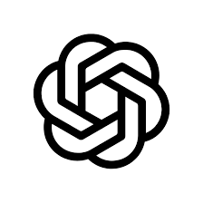
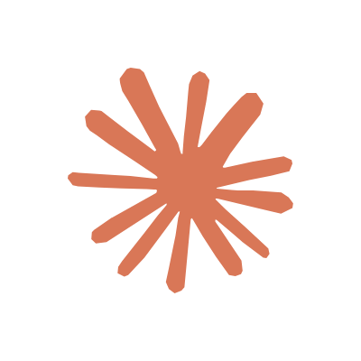

2일차: AI 개념 & 기본 도구 마스터
두려워 마세요! AI는 프로그래밍이 아니라 대화입니다. 6대 프롬프트 원칙과 Gemini 실무 전술
생성형 AI 본질
생성형 AI는 스스로 새로운 지식을 탄생시키는 창조자(Creative)가 아닙니다.
AI의 진짜 정체는 인터넷상의 방대한 언어 통계 정보를 굴려, 질문과 맥락에 가장 잘 부합하도록 단어들을 확률 분포에 맞춰 재배열해 주는 ‘고도의 언어 조립기(Generator)’입니다.
코딩이나 수학적 조작이 필요 없습니다. 가상의 똑똑한 인턴 비서에게 자연스러운 한국어로 명확하고 구체적인 조립 규칙(프롬프트)과 팩트 원재료(데이터)를 제공하는 것, 그것이 생성형 AI 실무의 핵심입니다.
어려운 기술이 아닌 언어
자바(Java)나 파이썬 코딩을 배울 필요가 전혀 없습니다. 오직 우리가 일상에서 동료와 협업할 때 쓰는 친숙한 한국어로 소통하면 끝납니다.
지치지 않는 24시간 동반자
피곤을 모르고, 휴식 시간 없이 우리가 시키는 자잘하고 귀찮은 서류 정리나 기초 문장 구상안을 1초 만에 깔끔하게 만들어 바칩니다.
두려워할 필요 없는 보조
AI는 여러분의 일자리를 뺏어가는 침입자가 아닙니다. 여러분의 단순 문서 노고를 극적으로 덜어 기획과 현장 돌봄에만 몰입하도록 돕는 착한 도구입니다.
쉽게 정리하는 AI 생태계 포함관계 (인공지능 > 머신러닝 > 딥러닝)
가장 넓은 범주로, 센서를 활용해 정해진 온도를 자동으로 맞추는 단순 온도조절기부터 자율주행까지 '기계가 스스로 판단을 모방하는 모든 기술'을 통칭합니다.
사람이 작동 규칙을 직접 코딩하지 않고, 방대한 데이터를 컴퓨터에 주어 최적값을 알아서 도출하게 하는 기술입니다. (예: 자전거가 넘어지지 않도록 수많은 주행 패턴 데이터를 던져주고 핸들 각도 최적값을 기계 스스로 찾아내게 학습시킴)
인간 뇌의 신경 세포 구조를 컴퓨터로 구현한 '인공신경망'을 여러 겹(Deep)으로 쌓아 올린 머신러닝의 하위 고도화 기술입니다. 자율주행(FSD)이나 알파고 등 극도로 복잡한 의사결정 전략을 학습하기 위해 사용됩니다.
GPT의 어원
생성형 AI의 핵심 축인 'GPT'의 알파벳 속에 숨겨진 동작 원리와 개념을 카드를 클릭하여 직관적으로 살펴보세요.
Generative
생성형 (Generative)
무에서 유가 아닌 '언어 재조합'
인터넷상의 수많은 검색 결과를 고대로 뱉는 것이 아니라, 질문자가 원하는 형태에 맞춰 문장 구조, 포맷, 아이디어를 확률 분포에 맞추어 새로 조립(재배열)해 줍니다.
Pre-trained
사전 학습 (Pre-trained)
언어 패턴의 '사전 학습'
수십억 개의 웹 문서, 기획서, 뉴스 텍스트를 미리 공부(학습)해 두었기에 자연스러운 한국어 문장 패턴과 규격을 이미 알고 있습니다. 단, 최신 팩트를 기억한다는 의미는 아닙니다.
Transformer
맥락 이해 (Transformer)
문맥을 꿰뚫는 '연결 분석'
문장 전체의 흐름을 병렬로 동시에 읽어, 사용자가 던져준 지엽적 지침(프롬프트)의 앞뒤 맥락을 보고 다음에 들어갈 단어 확률을 정확히 계산하여 엮어내는 구글 특허의 핵심 알고리즘입니다.
검색(Search)과 생성(Generation)의 차이
왜 생성형 AI는 종종 틀린 답(할루시네이션)을 당당하게 말할까요? 그 이유는 AI를 '검색기'로 착각하기 때문입니다.
검색 엔진 (사서)
- 세상에 이미 존재하는 원본 문서를 찾아줍니다.
- 출처가 명확하며 내용의 변형이 없습니다.
- 정보의 '정확성(Fact)'에 최적화되어 있습니다.
생성형 AI (작가)
- 확률과 통계를 기반으로 새로운 문장을 즉석에서 지어냅니다.
- 학습된 패턴을 조합할 뿐, 원본을 보관하지 않습니다.
- 정보의 '유창성(Fluency)'에 최적화되어 있습니다.
따라서 챗GPT에게 "2023년 남구 복지 예산이 얼마야?"라고 묻는 것은 소설가에게 팩트를 묻는 것과 같습니다. 모르는 것도 그럴싸하게 지어내는 할루시네이션(환각) 현상은 결함이 아니라 '생성'이라는 본질에서 파생되는 자연스러운 특징입니다.
AI 할루시네이션 현상
AI는 학습 데이터에 없는 내용도 마치 사실처럼 그럴듯하게 지어냅니다. 이를 할루시네이션(Hallucination, 환각)이라 부릅니다. 아래 시뮬레이터에서 AI가 실제로 존재하지 않는 역사적 사건을 얼마나 그럴듯하게 날조하는지 직접 체험해 보세요.
AI 환각 시뮬레이션 시작
클릭하면 AI가 거짓 역사를 지어내는 과정을 실시간으로 볼 수 있습니다
💡 핵심 포인트: 위 시뮬레이션에서 AI가 그럴듯하게 묘사한 "세종대왕의 맥북프로 던짐 사건"은 완전히 날조된 가짜 정보입니다. 15세기에 맥북프로가 존재할 수 없었죠. AI는 통계적 확률 패턴으로 텍스트를 생성하기 때문에 학습하지 않은 정보를 질문하면 이처럼 진짜처럼 보이는 거짓을 만들어냅니다. 이것이 바로 다음 세션에서 배울 RAG(검색증강생성)가 필요한 이유입니다.
RAG 핵심 원리
RAG(검색증강생성)란 AI에게 질문할 때, 관련 문서를 함께 첨부하여 AI의 뇌피셜(환각)을 차단하고 실제 팩트에 기반한 정확한 답변을 유도하는 기술입니다. 아래에서 사전학습만 의존하는 경우와 RAG를 적용한 경우의 차이를 직접 비교해 보세요.
버튼을 클릭하여 시뮬레이션을 시작하세요
사용자 질문 대기 중...
💡 핵심 포인트: RAG의 3단계 — ① 검색(Retrieve) 업로드된 파일에서 관련 문구를 찾고, ② 증강(Augment) 그 문구를 프롬프트에 주입하여, ③ 생성(Generate) AI가 팩트 기반으로 정확한 답변을 만듭니다. Gemini에 PDF를 첨부하여 질문하는 것이 바로 RAG의 실전 활용입니다.
사업계획서 데이터 파이프라인
거창한 코딩 정보가 아닙니다. 우리가 일상에서 보며 말하는 모든 날것의 형상들이 전부 데이터입니다.
AI는 똑똑한 창조주가 아닙니다. 우리가 무심코 지나치는 사소한 목소리, 사진 한 장, 글자 조각(Input)을 먹으며 돌아가는 통계 믹서기입니다. **아래의 일상 속 데이터 카드를 마우스로 탭하여 중앙 인공지능 믹서로 입력해 보세요!**
아이들과 나누는 고민 대화, 회의 중 흘러나오는 목소리 녹음본 등 물리적 파동 전체.
아동 센터 현장 활동 사진, 프로그램 동영상, 아이들이 그린 그림 이미지 파일 등.
아동 관리 일지 기록, 이메일 공문서, 공모사업 가이드 텍스트 및 수첩 속 낙서 메모.
엑셀 출석 통계, 센터 이용 아동 수, 예산 집행 영수증 가격표, 위도와 경도 등 수치 정보.
입력 데이터가 조합될 때마다 AI 코어의 연산 파워와 색상이 실시간으로 변경됩니다.
예산 집행 영수증(숫자 데이터)을 스캔하여 인공지능이 즉각 세무 정리한 연간 예산 계획안.
아동 상담 기록(텍스트)과 사진(시각 데이터)을 매칭하여 자동 분석한 성장 아동지도 계획서.
지역아동 지자체 보육 지침(텍스트)과 현장 음성 통계(음성)를 엮어 기획한 최우수 사업 계획 초안.
프롬프트 6대 원칙
AI 비서에게 건네는 업무 지시서, 즉 프롬프트를 작성할 때 반드시 포함해야 할 **6가지 골든 룰**입니다. 이 원칙들이 3일차에 실습하게 될 마스터 프롬프트 카드 내부에도 고스란히 이식되어 있습니다.
역할 부여 (Role)
AI에게 기획 전문가로서의 자격과 직함을 쥐여주어 어조와 전문성을 제어합니다.
맥락 제공 (Context)
현장 실무 상황과 취약 아동의 문제(1차 데이터) 등 설계 배경을 락(Lock)합니다.
예시 제공 (Examples)
원하는 기획서의 포맷, 예산 비목의 구성 공식 등을 미리 시범 문서로 보여줍니다.
명확한 임무 (Task)
"대충 적어줘"가 아니라 번역, 표 작성, 마인드맵화 등 수행 행동을 못 박습니다.
출력 형식 (Format)
마크다운 표, CSV, 순서가 매겨진 개조식 리스트 등 붙여넣기 편리한 구조를 요청합니다.
어조 및 톤 (Tone)
존댓말, 격식체(~할 계획임, ~함) 등 기관 공문서 어투에 맞는 종결 어휘를 명시합니다.
개인정보 보안 마스킹
공문서나 사례 회의록을 외부 생성형 AI에 입력할 때 개인 신상정보가 노출되면 심각한 보안법 위반이 됩니다. 슬라이더로 단계를 조절해 가며 실명과 기관명이 실시간 필터링되는 비식별화 과정을 테스트해 보세요.
(유출 상태) LEVEL 1
(부분 별표) LEVEL 2
(B대체 가명화)
"올해 남구 행복아동센터의 9세 아동 김준서는 가정 내 방임 상황에 놓여 있으며, 이에 따른 요리실습 아동 지도 계획으로..."
초거대 AI 진화 방향
글로벌 거대 인공지능 트랙인 GPT(OpenAI), Gemini(Google), Claude(Anthropic)를 완전히 분리하여 비교합니다. 전봇대의 전선처럼 **아날로그 전선이 양 노드 사이에 늘어지는 곡선(Catenary Q-Curve) 연출**로 모델 지능의 격차를 실감나게 감상해 보세요. 각 노드를 직접 클릭하여 세부 능력을 확인할 수 있습니다.

GPT Track (OpenAI)
(2020.06)
(2023.03)
(2024.05)
(2024.09)
(2025.08)
(2026.06 최신)
Gemini Track (Google)
(2023.12)
(2024.02)
(2024.12)
(2025.07)
(2025.11)
(2026.05 최신)

Claude Track (Anthropic)
(2023.03)
(2024.03)
(2024.06)
(2026.04)
(2026.06)
(2026.06 최신)